Statement
The exchange operator
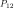
commutes with every observable of identical particles; physical states are eigenstates with eigenvalue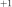
(bosons) or (fermions) (Heisenberg 1926; Fermi 1926; Bose 1924). Spin–statistics (proved in relativistic QFT): integer spin ↔ bosons, half-integer ↔ fermions.
(fermions) (Heisenberg 1926; Fermi 1926; Bose 1924). Spin–statistics (proved in relativistic QFT): integer spin ↔ bosons, half-integer ↔ fermions.
Consequences
- Two fermions in one-particle states
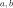
: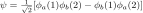
, zero if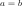
: Pauli exclusion (Pauli 1925). For fermions, a Slater determinant
fermions, a Slater determinant 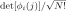
. - Spatial and spin parts: for two electrons, triplet spin (symmetric) × antisymmetric space, or singlet × symmetric space (Dirac 1926).
- Exchange energy: for a repulsion
 ,
, 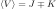
, with direct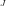
and exchange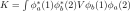
. The triplet (antisymmetric space) keeps electrons apart and has lower repulsion: Hund's rule, ferromagnetism.
Worked example
Helium excited states
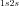
: para (singlet) and ortho (triplet) helium differ by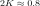
eV although the Hamiltonian contains no spin: the energy difference is a purely statistical effect, equivalent to the effective spin Hamiltonian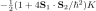
.Engineering applications
Pauli exclusion fills bands up to the Fermi energy (Fermi–Dirac statistics): it makes metals conduct, insulators insulate and white dwarfs stable. Bosonic bunching underlies stimulated emission (lasers), Bose–Einstein condensates and Hong–Ou–Mandel interference; Cooper pairs behave as bosons (superconductivity).
Pitfall
Pauli forbids two fermions in the same complete one-particle state (orbital and spin): two electrons share an orbital with opposite spins.